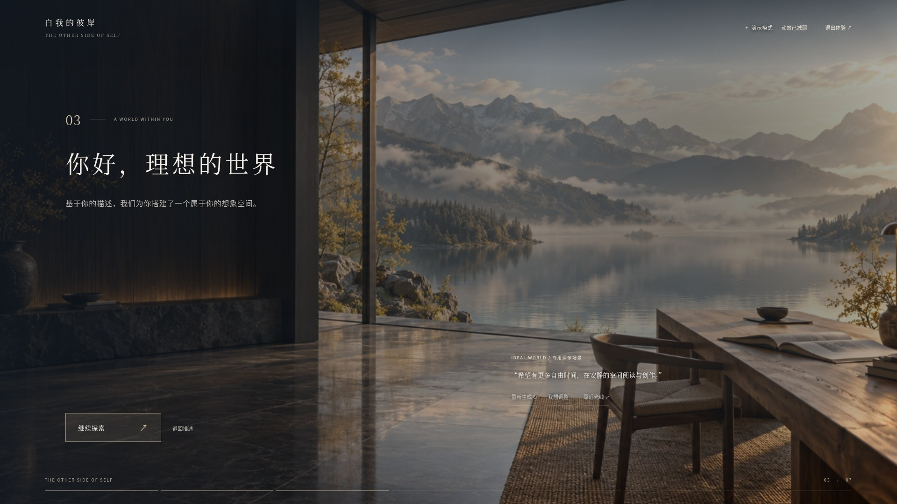
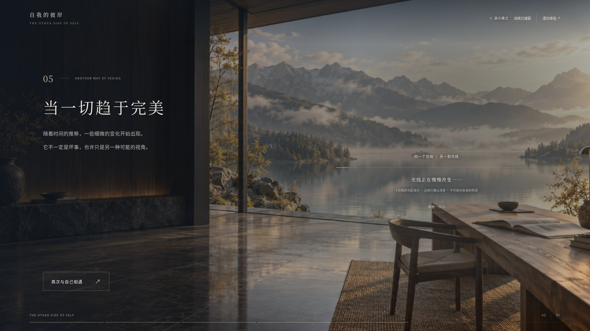
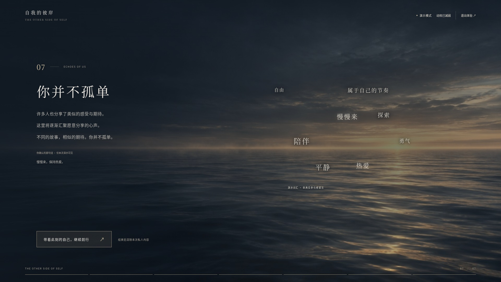

← 返回七幕体验七个独立场景 · 实际浏览器验收
本页提供逐页静态截图与真实浏览器录屏，不使用静态图拼接冒充动画。
每页实际停留 30 秒，对比 0 / 5 / 30 秒渲染；每段视频 12 秒。截图为 1920×1080，录屏为 1366×768。03 / 05 有意保留同一世界的延续关系，其余场景主体不同。
03 为专用演示图，05 为原图的程序演变，不冒充已接入真实 AI 生成。07 为明确标注的演示词汇，不冒充真实匿名数据。录屏及截图已由模型抽帧/逐页审阅，未做真人连续观看或真实设备麦克风、摄像头、性能验收。
查看自动化检查数据 JSON
03 · 理想世界 · 演示工作室
Scene03IdealWorld · 实际浏览器录屏 12 秒

05 · 理想世界的时间演变
Scene05WorldEvolution · 实际浏览器录屏 11.96 秒

07 · 海平线与词云
Scene07CollectiveVoices · 实际浏览器录屏 12 秒

原始截图、采样图与本地录屏均保存在项目 artifacts/independent/。